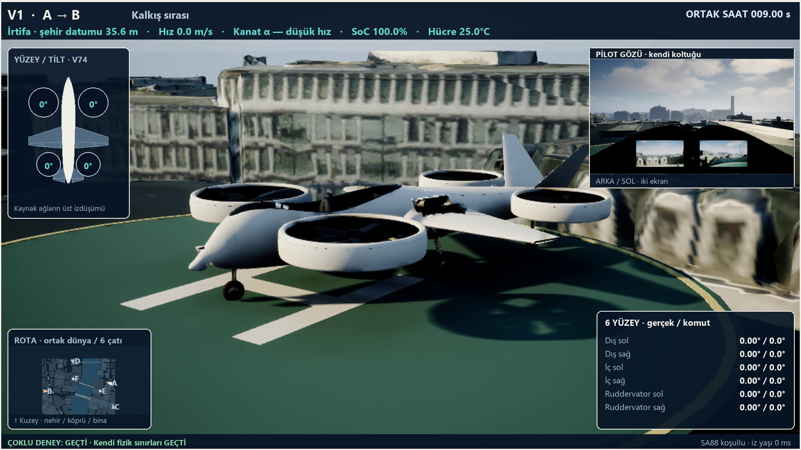

Ana hipotez
Deneyimler eşit dağılmıyor
Araçların görev ve arıza deneyimleri farklılaştığında standart federe öğrenmenin nerede kayıp ürettiği inceleniyor.
ÖN KAYITLI HAVACILIK ARAŞTIRMASI
Bu araştırma, dört V74 aracının ortak hava sahasındaki görevlerini benzetim ortamında inceler. Merkezi ve federe öğrenme yöntemleri; hedefe iniş, araçlar arası ayırma ve enerji–ısıl sınırlar bakımından değerlendirilir.

01 / ARAŞTIRMA SORUSU
İniş alanının doluluğu, enerji rezervi ve diğer araçların hareketi, her kararı birbirine bağlıyor. Araştırmanın odağı yalnızca uçabilmek değil; bu koşullarda görev emniyetini karşılaştırılabilir biçimde ölçmek.
V74 tasarımını incele ↗Araçların görev ve arıza deneyimleri farklılaştığında standart federe öğrenmenin nerede kayıp ürettiği inceleniyor.
Görev erişilebilirliği, enerji yeterliliği ve gözlenebilir arıza bağlamlarının birleştirmeye katılması sınanıyor.
Erken, orta ve son politikalar bağımsız görevlerde karşılaştırılıyor; eğitim ödülünün seçim için yeterli olup olmadığı sorgulanıyor.
02 / GÖREV SANDBOX’I
Dört aracı izleyin, hedeflerini değiştirin, bir iniş alanını kapatın. Bir kararın ortak görev akışını nasıl değiştirdiğini deneyin.
03 / KARŞILAŞTIRMA DÜZENİ
Aynı uçak, fizik, ödül ve kabul sınırları. Değişen, deneyimin nerede işlendiği ve yerel güncellemelerin nasıl birleştirildiği.
Başarı, çarpışma, ayırma ihlali, süre ve enerji ayrı raporlanır. Eğitim ödülü, görev başarısının yerine geçmez.
Araştırmanın ana karşılaştırma planı üç eğitim tohumu ve ortak dört araçlı değerlendirme dünyaları üzerine kuruludur. Sınırlı C/D ayar araştırması bu nihai karşılaştırmanın veya kör genellemenin tamamlandığı anlamına gelmez.
04 / KANIT VE SONRAKİ ADIM
Canlı eğitim bağlantısı değildir.
C ve D’nin sınırlı eğitimleri ve dört bağımsız geliştirme değerlendirmesi tamamlandı. Dört dünyanın hiçbirinde dört hedefe birlikte güvenli iniş sağlanamadı (0/4); öğrenilmiş görev kabulü henüz karşılanmadı.
Sayfanın sunumu 6. adım için hazırlanmıştır; araştırmanın bu aşamaya kabul edildiği anlamına gelmez.
Kartları açarak kayıt ve kabul koşullarını inceleyin.
Bunlar sabit araştırma kabul sınırlarıdır; sertifikasyon kriterleri değildir. SA88 hücresine dayalı paket, elektrik ve termal davranışın bir bölümü araştırma varsayımlarına bağlıdır. Benzetim sonuçları üretim, montaj veya fiziksel uçuşa hazır araç kanıtı oluşturmaz.
05 / TASARIM VE GÖRSELLEŞTİRME
06 / ARAŞTIRMA HAFIZASI
V74 öncesi tasarım adımının 149 koşusu ve 54 karar belgesi ayrı arşivde duruyor. Bu kayıtlar güncel C/D eğitiminin sonuçları olarak sunulmaz.
V74 görünüşleri, tasarım değerleri ve önceki modelin sınırları.
Ölçümden önce dondurulan kurallar; düzeltmeler ve olumsuz sonuçlar.
Önceki tasarım adımının koşu günlükleri ve kayıtlı öğrenme eğrileri.
Kaynaklar, sürümler, arşiv bağlantıları ve lisanslar.
Arşivlenen çalışma, bağımsız tilt eksenleri için beklenen üstünlüğü doğrulamadı. Bazı karşılaştırmalar çözücü kusurları nedeniyle düzeltildi; öğrenme kampanyalarında görev kapıları aşılamadı. Bu olumsuz bulgular ve düzeltmeler arşivde korunuyor. Güncel V74 öğrenilmiş görev yeterliğinin yerine geçmezler.
KAYNAKLAR VE PROGRAM